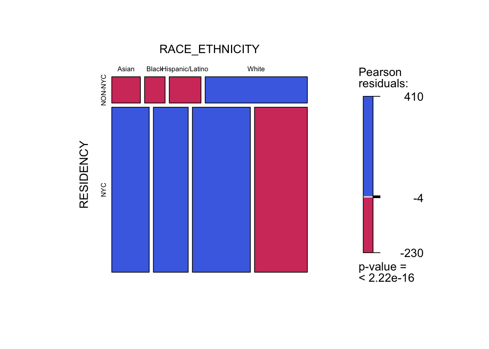

Chapter 4 Results
4.1 Residents Vaccinated
In this part, we want to explore whether there is a relationship between vaccinated people’s residency, age and race. The data we use is loaded from by-residency-demo.csv.
The following mosaic chart show the residency and age of NYC residents who are vaccinated for COVID-19. We can the proportion of children who were vaccinated was higher among New Yorkers than among non-New Yorkers and the proportion of adult who were vaccinated was lower among New Yorkers than among non-New Yorkers.

The following mosaic chart show the residency and age of NYC residents who are vaccinated for COVID-19. We can conclude that among black populations, middle-aged adults are less likely to be vaccinated than children and the elderly; whereas in the Asian and Latinos group, compared with children and the elderly, the willingness to vaccinate is stronger among the middle-aged。

The following mosaic chart show the residency and age of NYC residents who are vaccinated for COVID-19. We can see that Asians, blacks and Latinos living in New York are more open to vaccinations than those who are non-residents

4.2 People Vaccinated and Doses Administered by age and borough and race
In this part, we wanted to explore attitudes towards vaccination in different age group and in different boroughs and in different races. The vaccination status is divided into three categories: at least 1 dose; Fully vaccinated(completed the first stage); Booster vaccinated.
Firstly, we focus on all age group. The following bar chart shows that more than sixty percent of the population has been vaccinated, which means that most people in New York are open to vaccines. Among all ethnic groups, Asians have the highest vaccination rate and it is much higher than that of other races; among all boroughs in New York, the Manhattan area has the highest vaccination rate, especially Latinos and whites in this area.

Secondly, we divided age in to three groups: child(0-17); adult(18-64); older(65+). The following 3*3 bar chart shows the proportion of population in each age group by vaccination status. We can still see that Asians have the highest vaccination rate and it is much higher than any other group.
The vaccination rate of children is much lower than that of adults and the elderly, especially for booster vaccinations. It may be because parents are worried that the booster will have hidden dangers to children’s health.


Third, We fixed vaccination status and studied differences across age groups and races and boroughs.
The following three chart show that adults and elderly have higher vaccination coverage than minors of the same ethnicity in the same area, and most adults, elderly,and Asian children have completed all vaccinations. But we observed that, except for booster, the vaccination rate of Asian children is even higher than that of non-Asian adults in the same area. Therefore, we can conclude that Asians trust vaccines much higher than all other races.


4.3 Vaccination Trends
In this part, we want to explore the total and daily number of COVID-19 vaccine administered in NYC. This includes doses given in the city to non-NYC residents. Data on people vaccinated shows the trends in people who received at least one dose, completed the primary vaccine series and who also received booster doses, by borough, age, and race.
4.3.1 daily trend
The following daily vaccinated trend chart show that there are two peaks for covid-19 vaccination. The first peak is around 2021.4, it is mainly the first stage of vaccination. The second peak is mainly the booster vaccination.

4.3.2 age trend
The vaccination trend chart of different age groups shows that the proportion of people aged 44-64 is the highest in the first stage of vaccination. Those over the age of 55 received the highest percentage of booster vaccines. We can assume that for the elderly who have received the vaccine, they prefer to protect themselves by getting a booster.
4.3.3 boro trend
The vaccination trend chart of different boroughs groups shows that the order of different boroughs in the threes trend charts is basically the same. Regardless of whether it is the first stage of vaccine or booster, Manhattan and Queens have higher vaccination rates, combined with the information that Asians are much more vaccinated than other races, we can assume that the proportion of Asians in Queens and Manhattan may be higher than other areas. In contrast, Brooklyn and the Bronx may have fewer Asians.

4.3.4 race trend
ANIN is American Indian and Alaska Native Resources, its population is small, so it did not appear in the previous analysis.
The vaccination trend chart of different boroughs groups shows that ANIN and Asians had a higher proportion of the first stage vaccinations, while whites and blacks had a lower proportion. For booster vaccination, Latinos and blacks are less likely to be vaccinated。